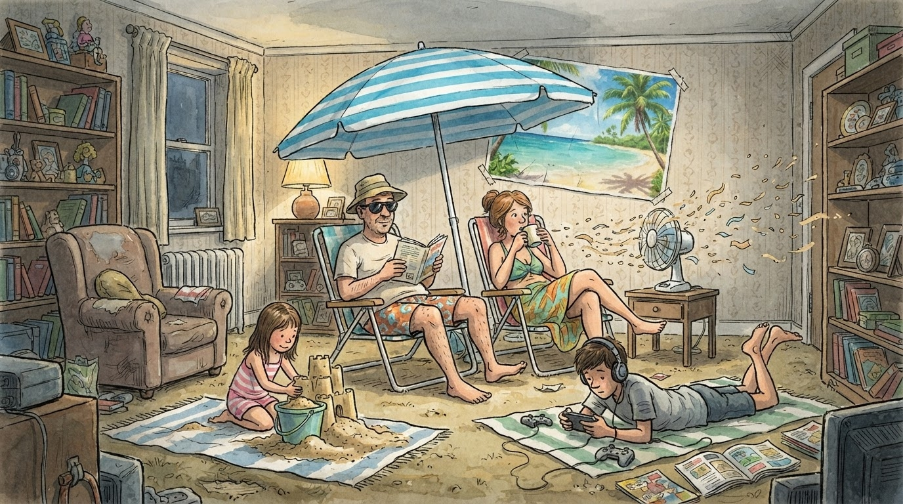

GR
Kosovarët zgjedhin Greqinë
Turizëm
Gazeta Satirike e Kosovës dhe Shqipërisë — lajme që nuk duhet t'i besoni, por i lexoni gjithsesi
ASK konfirmon: shumica e familjeve mbetet në shtëpi këtë verë. Redaksia jonë ka zhvilluar tashmë paketën "Plazh Ballkoni Deluxe" — peshqir, syze dielli, dhe erë ftohtësie nga kondicioneri i fqinjit.

Sipas të dhënave zyrtare, më shumë se gjysma e familjeve kosovare nuk mund të përballojnë kosto e një jave pushimi larg shtëpisë. Redaksia jonë e ka pritur këtë lajm me pak surprizë, pasi "larg shtëpisë" prej kohësh e kishte zëvendësuar me "larg televizorit".
Agjencitë turistike raportojnë rritje të interesimit për "pushime lokale" — term që, sipas hulumtimit tonë të thelluar, përfshin ballkonin, oborrin, dhe rastet e veçanta, çatinë e ndërtesës nëse nuk ka rregulla kundër.
"Plazhi ynë ka pamje drejt murit të fqinjit, por është falas dhe s'ka radhë." — një qytetar, duke shpjeguar konceptin e "turizmit të brendshëm"
Nëse 57.3% s'mund të përballojnë pushime, dhe 40.7% e konsiderojnë strehimin barrë të rëndë, redaksia jonë ka llogaritur se përqindja e njerëzve që mund të pushojnë REALISHT — pa u shqetësuar për faturën — mbetet një shifër aq e vogël sa kërkon mikroskop statistikor.
Ministria e Turizmit u shpreh optimiste: "Kemi rritur numrin e vizitorëve të huaj." Kur u pyet për vizitorët vendorë, përgjigja ishte më e shkurtër dhe u zëvendësua me një buzëqeshje diplomatike.
Ndërkohë, ata pak me fat që arrijnë të udhëtojnë raportojnë kthim me foto plazhesh të njëjta çdo vit — provë tjetër, sipas nesh, se ekonomia jonë funksionon në cikël, jo në rritje.